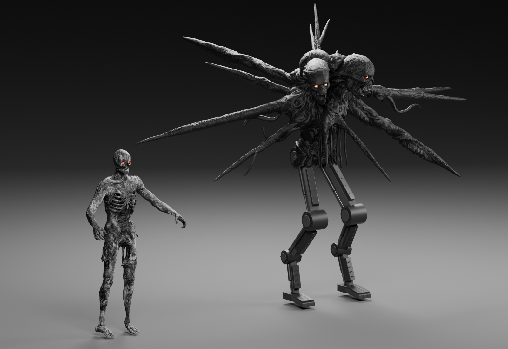

Charcoal horde · robotic Doppelgast
Gray, black and red charcoal zombies. Their skin textures are neutral gray; their eyes use red-only color and emission. The Doppelgast keeps its original eyes, with a black body and articulated mechanical legs.

Blender studio preview. In-game lighting, animation and glow still need your playtest. Manglers use the unchanged default Hellbound appearance and animations.
Implementation, spawn schedule and playtest notes · Blender source · Crown material review